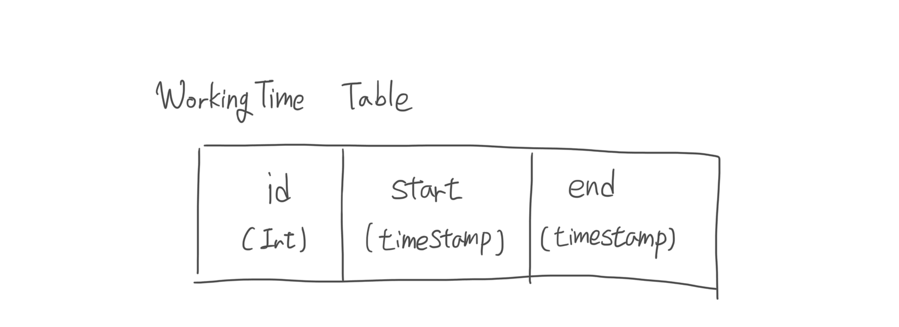
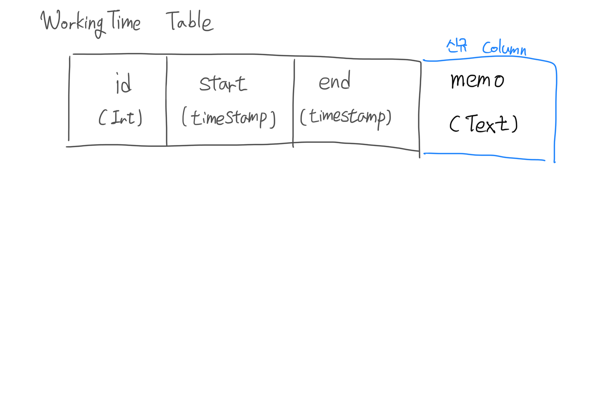

[iOS] SQLite3 Database 스키마 버전 관리의 필요성 및 방법 소개
-읽음
Database SQLite3에 스키마 버전관리가 필요한 이유
앱에 신규 기능을 추가하다 보면 Database(SQLite3) 스키마에 변경이 필요한 경우가 생깁니다. 예를 들면, 현재 토이 프로젝트 “퇴근요정” 은 아래와 같은 테이블을 갖고 있습니다.

각 근무시간의 PK인 id, 근무 시작시간 start, 근무 종료시간 end, 이렇게 3개의 column을 갖고 있습니다.
이번 v1.7 에서는 각 근무에 대한 특이사항 및 근무지 등 사용자가 다양하게 사용할 수 있도록 하기위해 메모 기능을 추가 예정입니다. 따라서 새로운 테이블은 아래와 갖은 구조를 가져야 합니다.

생각만큼 구현이 쉽지 않다
앱이 실행되고 Database를 관리하는 Singleton의 객체가 초기화 될 때 DB를 초기화하고 Table이 없으면 새로 생성하는 로직은 이미 기존 코드에서 갖고 있습니다.
1 | if sqlite3_exec(db, "CREATE TABLE IF NOT EXISTS WorkingTimes (id INTEGER PRIMARY KEY AUTOINCREMENT, start INTEGER, end INTEGER)", nil, nil, nil) != SQLITE_OK { |
Table을 생성하는 SQL문1
CREATE TABLE IF NOT EXISTS WorkingTimes (id INTEGER PRIMARY KEY AUTOINCREMENT, start INTEGER, end INTEGER
를
1 | CREATE TABLE IF NOT EXISTS WorkingTimes (id INTEGER PRIMARY KEY AUTOINCREMENT, start INTEGER, end INTEGER, memo TEXT |
로 변경하면 쉽게 끝날 것 같지만, 큰 문제가 발생합니다.
앱을 처음 설치하는 유저의 경우 Table이 정상적으로 생성되고 앱 사용에 문제가 없지만, 기존 v1.6을 사용하던 유저들은 memo Column 이 없는 WorkingTime Table을 사용하게 되므로 UI상에서는 메모를 입력하고 수정하고 저장하지만, 저장도, 불러올 수도 없는 문제가 생깁니다.
앱 버전관리와 마찬가지로 DB도 버전관리가 필요함을 알 수 있습니다. 앱 버전관리에 대한 필요성은 iOS 앱 업데이트 (강제 업데이트, 선택 업데이트) 기능 구현 예제 에서 포스팅했습니다.
SQlite3 스키마 버전관리 방법
버전관리를 하기 위해서는 3가지를 인지하고 있어야 합니다.
- 현재 버전
- 최신 버전
- 마이그레이션 방법
따라서 버전관리를 구현함에 있어서 스키마 버전을 관리할 수 있도록 UserDefault를 사용하게 되며 DB 초기화 로직에서 버전에 따라 마이그레이션을 진행하면 됩니다.
DB 버전 관리
UserDefaultManager 에 아래 메소드를 추가합니다.1
2
3
4
5
6static public func databaseSchemaVersion() -> NSInteger {
return UserDefaults.standard.integer(forKey: "databaseSchemaVersion")
}
static public func setDatabaseSchemaVersion(version: NSInteger) {
UserDefaults.standard.set(version, forKey: "databaseSchemaVersion")
이전 버전에서는 “databaseSchemaVersion” 을 key로 Set된 데이터가 없기 때문에 기존의 스키마를 0으로 사용할 수 있습니다.
DB 초기화
1 | public func initialize() { |
신규 유저를 위해 WorkingTime Table을 생성하는 Query를 업데이트 하며 정상적으로 Table이 생성되면 UserDefaultManager를 통해 현재 DB Schema 버전을 1로 저장합니다.
마이그레이션
1 | public func initialize() { |
DB초기화 시점에서 현재 SchemaVersion을 확인하여 최신(1)이 아닌 (0)인 경우에 최신버전의 Schema로 맞춰주기 위해 ADD COLUMN Query를 실행합니다. 경우에 따라서는 더 복잡한 코드도 필요할 수 있습니다.
한계점
결국 마이그레이션 코드는 레거시로 남게 됩니다. 새로운 스키마가 나올때마다 기존 유저들 대응을 위한 마이그레이션 코드가 지속적으로 추가되어야만 하는 한계가 있습니다.
한계 대응
그럼 위에서 설명한 한계를 극복하기 위해서는 어떤 방법이 있을까요. 지표 수집을 통해서 현재 사용자들의 어떤 버전의 앱들을 주로 사용하고 있는지 확인하며 사용자가 적은 버전은 강제 업데이트 최소 지원 버전 제한 정책을 통해 제한합니다. 앱 버전을 제한하게 되면 해당 버전에서 사용하던 과거 스키마 버전의 마이그레이션 코드는 지울 수 있게 됩니다.